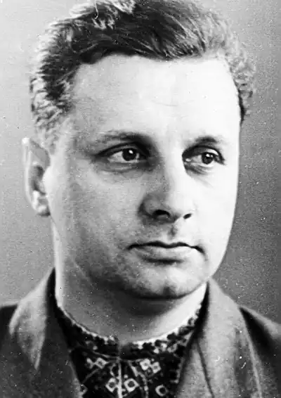

Анатолій Павлович народився 17 листопала 1919 року в місті Ічня на Чернігівщині в сім'ї залізничника. Батько письменника був завзятим мисливцем. Багато років він головував у місцевому товаристві мисливців та рибалок. Маленькому Толі нерідко випадала нагода побувати з батьком на полюванні, посидіти біля вечірнього вогнища, заночувати під копицею пахучого сіна.
В Ічні хлопець закінчив семирічку, відвідував музичний і фотогурток. Та найбільше любив уроки літератури, і насамперед читання творів свого земляка Степана Васильченка.
Перше оповідання А. Дрофаня "Перепел" з'явилося у 1945 році, а через одинадцять років вийшла збірка оповідань "Журка з Сонцеграда". Особливо плідними для письменника були останні три десятиліття. За цей час він видав півтора десятка своїх книжок. Завоювали симпатії читачів романи "Таїна голубого палацу", "Буремна тиша"; повісті "У кожному камені — іскра", "Біла криниця", "Загадка старої дзвіниці"; документальна повість "Коли ми красиві"; збірки оповідань "Троянди", "Альбіон", "Земля для квітів", "Сонцелюби"; збірка сатиричних оповідань "Іменини"; книги для дітей "Про Барона, Мавру і Мале Вушко", "Коли я виросту", "Янехо" та інші твори. "Коли я виросту" – одна з найвідоміших збірок письменника. У книжці йдеться про талановитих, працьовитих людей. Звичайно, декому професія колодязника, або, скажімо, пічника може здатися несучасною і не дуже цікавою. Але це тільки на перший погляд. Познайомившись ближче з дідом Архімедом, славетним колодязником, або з пічником, героєм оповідання "Образа", ви переконаєтесь, що нудних і нецікавих професій немає: будь-яке діло цікаве, коли воно потрібне людям, коли його роблять з любов'ю, майстерно.